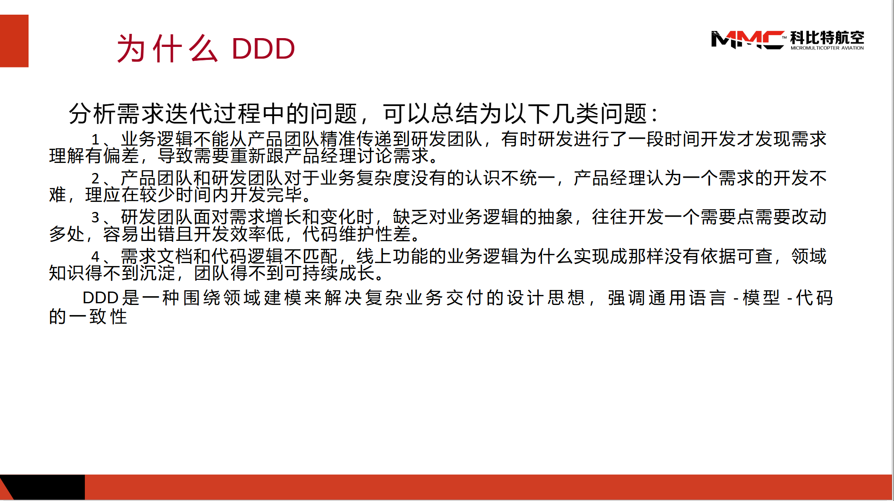
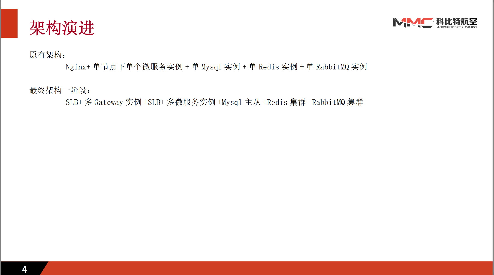

余乾开
 15219482740
15219482740
 dearchuckyu@gmail.com
dearchuckyu@gmail.com

 个人信息
个人信息
男，1991 年出生
求职意向：Java 研发工程师， DevOps工程师，云原生微服务架构师
工作经验：10 年
期望薪资：25k+
期望城市：深圳、上海
 教育经历
教育经历
学士，统招，东北电力大学，机械工程自动化，2009.9~2013.7
GPA：3.28/4.0
CET4
 工作经历
工作经历
科比特航空 公司，基础研发 部门，技术主管，2021.5~
主要负责科比特软件研发团队技术架构，包括开发架构、运维架构整体方向确定，框架搭建。在疫情期间，主持云上基础设施建设工作，成功为公司实现降本增效，同时大幅度提高了公司项目的稳定性和迭代速度。
参与的项目：自研无人机操作PAAS平台-天目将、政府合作无人机综合城市治理平台-城市之鹰、自研资源整合平台-云享飞、政府合作无人机输电线路巡检平台-电力巡检。
工作期间，因为负责的工作不再局限于开发，在技术上个人感觉最大的困难在于知识面的匮乏，为满足项目要求，快速提高自我学习和适应能力。
对公司贡献最大的就是主导的基建上云工作，运维人员从原来的5人缩减到后期的2人兼职运维，本人也升职为技术主管
自主创业，技术负责人，2018.12~2021.4
负责外贸电商平台的整体架构搭建以及Oms开发工作
易达云 公司, 高级研发工程师，2016.9~2018.12
负责订单管理系统OMS、仓储管理系统WMS的全栈开发工作，带领团队完成电商平台整体重构
广州南沙中科院，高级研发工程师，2015.9~2016.9
负责电商平台维护、统计分析平台开发工作
多森软件 公司，研发工程师，2014.11~2015.9
负责车联网服务国标协议解析工作，对包括网络协议在内的通信协议有深刻理解。同时还负责自研车联网平台的开发维护工作
信义科技 公司，研发工程师，2013.9~2014.10
负责市局合作-反恐安保项目的开发维护工作
 部分项目经历
部分项目经历
云享飞
ASM、RabbitMQ、Redis、Skywalking、EFK、Prometheus、Grafana、ArgoCD、Minium（MiniTest）、Playwright
云享飞项目的愿景是为无人机行业提供一个资源整合互联网平台，连接上下游用户，具体包括行业产品售卖、租赁，并提供作业服务、技能培训等功能 本人作为项目技术经理兼运维主管，主要负责项目架构设计、运维体系搭建、自动化测试体系搭建工作：
1、项目架构设计：
拆分CMS、PMS、IMS、OMS微服务
采用Nginx Ingress+JWT+SpringSecurity实现路由鉴权
VirtualService+DestinationRule实现流量路由
2、运维体系搭建：
GithubAction+Kustomize+ArgoCD+企业微信实现自动部署、持续集成、更新通知
Skywalking+javaagent实现链路追踪
EFK+SideCar实现集中式日志管理
Exporter+Prometheus+Grafana实现服务器资源监控
3、自动化测试体系搭建：
Minium（MiniTest）编写小程序自动化测试脚本
Playwright编写网页端自动化测试脚本
城市之鹰
Docker、Prometheus、Grafana、jMeter、EFK
鹰眼项目是科比特为盐城公安打造的一套集远程调度、公安侦查、城市智慧管理的综合平台 本人作为二期阶段的开发负责人加入鹰眼项目，主要负责项目的攻坚工作：
1、搭建服务监控、告警平台：采用了Docker+Prometheus+Grafana，结合二次开发方式监控容器内部服务。
相比自行通过命令定时采集监控指标的方案，该方案所需的工作量明显下降，并且提供的指标更为丰富、监控体系更为成熟
缺点在于可视化组件需要自行开发，并且因为项目的网络复杂性（公安内网），并未做到不同层级的监控。
最终简化了日常的服务运维工作，并为平台的性能优化、服务告警提供了支持
2、性能优化：针对QPS低、响应时间慢、系统错误率高等情况，提供了一揽子解决方案，包括但不限于
代码优化：针对多层循环内部执行SQL导致的响应时间慢，代码优化为执行批量SQL
限速算法：针对WebSocket无效通信导致Channel卡死的情况，补充令牌桶限速算法，过于频繁的通信将直接返回提示，不进入后续环节
SQL优化：通过对部分SQL进行Explain分析，建立并调整索引、调整数据类型、补充约束，提高SQL的执行效率
统计中间表：针对部分首页的统计接口，提供定时或事件驱动方式主动更新统计中间表，减少或移除（部分接口不要求实时）查询时临时执行统计SQL的数据量
统一接口规范：针对单一首页拆分成40+请求，并且大多数请求重复的情况，制定统一的接口规范，降低接口请求频次
数据库反规范化：针对跨库、跨表查询，提供冗余数据，通过消息中间件驱动更新
缓存：通过SpringCache+Redis提供应用级别的缓存
优化后，平台响应延迟最高不超过2s，吞吐量1000+，服务本身错误率不超过1%
天目将PAAS平台
阿里云ACK、EFK、UiPath
天目将PAAS平台是将科比特多年来在无人机行业的积累衍生出的自研PAAS平台，主要提供无人机远程调度与AI识别功能，并支持各行业子平台的接入 在平台开发中，本人主要承担后端开发与服务运维工作：
1、微服务架构设计：拆分了CMS、GateWay、UavControl、Statistic等微服务，制定一套鉴权、日志、监控、告警方案，并且前端代码也作为容器运行（最初设想微服务包含自己的UI，即微前端），nginx Ingress实现LB，GateWay+JWT实现鉴权，sidecar模式+EFK实现集中式日志管理，metricbeat实现服务器监控，二次开发阿里云告警方案实现企微通知告警，minio实现分布式文件存储（后续调整采用阿里云OSS）
2、CI/CD：为实现敏捷开发流程，采用Jenkins搭建了一套CI/CD流程，实现了代码发布-自动部署测试，并结合k8s实现金丝雀发布、AB测试（后续因公司部门原因调整采用Github-Action实现CI/CD）
3、监控服务开发：metricbeat+阿里视频直播+SpringBoot二次开发实现服务器、流媒体监控，包括但不限于内存、CPU、带宽、磁盘、流媒体PV、流媒体UV等
4、服务上云：平台二期因人力成本原因，平台全部采用云基建方式，负责了服务上云的整体方案制定，包括RDS、Redis、ACK、OSS、云直播上云方案。
5、Statistic微服务开发：为实现平台的数据大屏，独立负责统计服务的开发，通过RabbitMQ+EDA实现统计数据的近实时更新
6、UiPath实现网页端自动化测试：为了加快版本发布频率，减少回归测试耗时，采用RPA工具UiPath对网页端功能进行自动化测试，减少了部分测试人员的工作内容
平台为潜在客户提供了一套低成本的体验无人机服务的方式，疫情期间，仍为公司订单成交率促增30%左右
 技能清单
技能清单
★★★ Java、Spring
★★★ Mysql
★★★ Docker、k8s
★★☆ 设计模式、网络、OS、计组、数据结构
★★☆ DDD、Scrum、Spock
★★☆ Python
★★☆ Redis、RabbitMQ、Nginx
★★☆ SpringCloud
★★☆ Netty
★★☆ Istio、Jenkins、EFK、Prometheus、Grafana、Skywalking
★★☆ Minium、Playwright
★☆☆ MongoDB、Zookeeper、Kafka、React、JavaScript
自我评价
熟练掌握Java开发企业级应用必备技能，包括但不限于SpringBoot、SpringCloud、SpringDataJpa、MyBatis、Redis、RabbitMQ、Mysql。拥有高并发系统开发、Jvm性能调优、SQL调优等实战经验
熟练掌握K8S运维体系必备技能，包括从环境搭建、CICD、各类网络问题排查等一系列技能，拥有3年阿里云线上k8s集群运维实战经验
熟练掌握云原生微服务架构必备技能，能依据业务、技术、内部环境等各类因素灵活拆分微服务，做好微服务各类组件调研选型。拥有6年架构实战经验，3年云原生微服务架构实战经验
基本掌握网页和小程序自动化测试必备技能，提高回归测试效率，拥有近一年自动化测试实战经验
其他
公司内部分享：领域驱动建模实战

公司内部分享：天目将正在进行的架构演进

致谢
感谢您花时间阅读我的简历，期待能有机会和您共事。